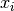
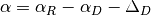
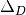
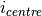
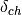
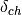

LoadILLReflectometry dialog.
Table of Contents
| Name | Direction | Type | Default | Description |
|---|---|---|---|---|
| Filename | Input | string | Mandatory | Name of the Nexus file to load. Allowed extensions: [‘.nxs’] |
| OutputWorkspace | Output | MatrixWorkspace | Mandatory | Name of the output workspace |
| BeamCentre | Input | number | Optional | Beam position in workspace indices (disables peak finding). |
| OutputBeamPosition | Output | TableWorkspace | Name of the fitted beam position output workspace | |
| DirectBeamPosition | Input | TableWorkspace | A workspace defining the beam position; used to calculate the Bragg angle | |
| BraggAngle | Input | number | Optional | User defined Bragg angle in degrees |
| XUnit | Input | string | Wavelength | X unit of the OutputWorkspace. Allowed values: [‘Wavelength’, ‘TimeOfFlight’] |
Loads data of a Nexus file obtained from an ILL reflectometry instrument D17 or FIGARO into a Workspace2D. Both time-of-flight and monochromatic instrument configurations are supported. In general, this loader reads detector and monitor counts and adds x-axis and error values. The output workspace contains histogram data. The x-axis can have units in time-of-flight or wavelength with non-varying and varying bins, respectively. The conversion to wavelength uses the algorithm ConvertUnits v1. The sample logs associated to the output workspace contain two additional entries, Facility, set to ILL, and loader.two_theta which writes the angle used to rotate the detector. Detector indices and spectrum numbers start with zero like workspace indices.
The chopper values are used for computing the time-of-flight values for the bin edges  by the following equation:

with the following variables: channel width  , time-of-flight delay
, time-of-flight delay  , offset , phase of second chopper
, offset , phase of second chopper  , phase of first chopper
, phase of first chopper  , open offset
, open offset  and velocity of first chopper
and velocity of first chopper  .
.
This loader will update the detector position from what is defined in the instrument definition files. The detector will be moved to the current distance from origin and rotated around it either on the horizontal or vertical plane.
The rotation angle can be one of the following:
Calibration using a direct beam measurement is triggered when the DirectBeamPosition property is specified. In this mode, a direct beam file should be loaded separately and the OutputBeamPosition output property used to obtain a special TableWorkspace containing information on the direct beam position. This workspace can be further given as the DirectBeamPosition input to proceeding loads as exemplified in the following:
LoadILLReflectometry('directbeam.nxs', OutputWorkspace='direct_beam_ws', OutputBeamPosition='beam_position_ws')
LoadILLReflectometry('sample1.nxs', OutputWorkspace='sample1_ws', DirectBeamPosition='beam_position_ws')
LoadILLReflectometry('sample2.nxs', OutputWorkspace='sample2_ws', DirectBeamPosition='beam_position_ws')
# ...
The detector is rotated around angle  , given by
, given by

where is the nominal detector angle, the detector angle of the direct beam reference and  the beam position offset (see below) of the reference.
The BraggAngle option rotates the detector by an angle such that the angle between the direct beam axis and the reflected peak centre on the detector is twice BraggAngle
where  the beam position offset angle (see below). The angle
the beam position offset angle (see below). The angle  is BraggAngle in the simple case that the sample is in the origin. If a horizontal sample shift is present (FIGARO), the angle is calculated so that the angle to the reflected peak on the detector seen from the shifted sample position is the requested BraggAngle.
is BraggAngle in the simple case that the sample is in the origin. If a horizontal sample shift is present (FIGARO), the angle is calculated so that the angle to the reflected peak on the detector seen from the shifted sample position is the requested BraggAngle.
To calculate the angle between the detector centre and the beam, the reflectometry data is integrated using Integration v1, transposed using Transpose v1 and finally fitted by a Gaussian using Fit v1. The offset angle  can then be calculated by
can then be calculated by

where  is the workspace index of the detector centre (127.5 for D17 and FIGARO),  the fitted peak position,
the fitted peak position,  the physical pixel width and
the physical pixel width and  the sample to detector centre distance.
the sample to detector centre distance.
The value of can be overridden by the BeamCentre property. This effectively disables the fitting procedure.
In the case of D17, this loader will move the source position (‘chopper1’ in the instrument definition file) on the z-axis to the position

where  is the VirtualChopper.dist_chop_samp sample log entry and  the Distance.ChopperGap entry.
is the VirtualChopper.dist_chop_samp sample log entry and  the Distance.ChopperGap entry.
Note
To run these usage examples please first download the usage data, and add these to your path. In MantidPlot this is done using Manage User Directories.
Example - Load ILL D17 Nexus file:
# Optional: set facility and default instrument
config['default.facility'] = 'ILL'
config['default.instrument'] = 'D17'
# Load ILL D17 data file (TOF mode) into a workspace 2D using default input options:
ws1 = LoadILLReflectometry('ILL/D17/317370.nxs')
print("Workspace {} has {} dimensions and {} histograms.".format(ws1.name(), ws1.getNumDims(), ws1.getNumberHistograms()))
Output:
Workspace ws1 has 2 dimensions and 258 histograms.
Example - Specify user angle:
import numpy
# Load ILL d17 data file (TOF mode) into a workspace 2D using a user-defined angle of 30 degrees:
ws2 = LoadILLReflectometry('ILL/D17/317370.nxs', BraggAngle=5.5)
# The original detector angle can be found in the sample logs:
angleOrig = ws2.getRun().getProperty("dan.value").value
# The reflected beam center is around pixel 202.
detId = 202
det = ws2.getInstrument().getDetector(detId)
angleDet = ws2.detectorTwoTheta(det) / numpy.pi * 180
print("The nominal angle in the NeXus file was {:.2} degrees.".format(angleOrig))
print("Pixel at detector ID {} was rotated to {:.1f} degrees.".format(detId, angleDet))
Output:
The nominal angle in the NeXus file was 3.2 degrees.
Pixel at detector ID 202 was rotated to 11.0 degrees.
Example - Calibration of detector angle by direct beam:
import numpy
directBeamWS = LoadILLReflectometry('ILL/D17/317369.nxs', OutputBeamPosition='beamPositionWS')
beamPosWS = mtd['beamPositionWS']
peakCentre = beamPosWS.cell('PeakCentre', 0)
print('Fitted direct beam maximum (in workspace indices): {:.5}'.format(peakCentre))
reflectedBeamWS = LoadILLReflectometry('ILL/D17/317370.nxs', DirectBeamPosition=beamPosWS)
# Lets load the data without detector angle calibration just for reference
refWS = LoadILLReflectometry('ILL/D17/317370.nxs')
det = reflectedBeamWS.getDetector(int(peakCentre))
detAngle = numpy.degrees(reflectedBeamWS.detectorTwoTheta(det))
det = refWS.getDetector(int(peakCentre))
refAngle = numpy.degrees(refWS.detectorTwoTheta(det))
print('Uncalibrated detector angle: {:.4} degrees.'.format(refAngle))
print('Detector angle after calibration using direct beam: {:.4} degrees.'.format(detAngle))
Output:
Fitted direct beam maximum (in workspace indices): 202.18
Uncalibrated detector angle: 1.537 degrees.
Detector angle after calibration using direct beam: 1.598 degrees.
Categories: AlgorithmIndex | DataHandling\Nexus | ILL\Reflectometry
C++ source: LoadILLReflectometry.cpp (last modified: 2019-06-26)
C++ header: LoadILLReflectometry.h (last modified: 2019-02-19)
{kind=link}